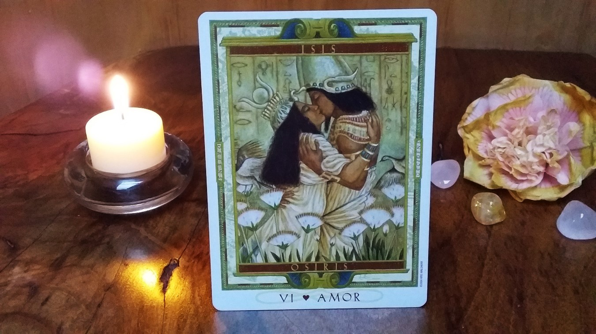

CONSULTA A NUESTROS EXPERTOS
EL TAROT Y EL DESTINO
Redactor: Valentina


¿Cuántas veces en tu vida has pedido al Universo, a las estrellas, a las fuerzas superiores (o como tú prefieras llamarle) una señal, algo que indicara el camino, que te diera esperanza en esos momentos difíciles o que te ayudase a tomar esa decisión… Y quizá fuiste testigo de un acto mágico, de un milagro, de una sincronicidad inexplicable; personas que aparecen en tu camino de formas misteriosas, llamadas inesperadas, luces en el cielo, números que se te repiten constantemente.
¿Cuál es el origen de los eventos de tu vida? ¿Será simplemente el destino? ¿Quién escribe nuestro destino? ¿Podemos cambiarlo?
Una gran cantidad de personas acuden al tarot para preguntar sobre su futuro, si estás leyendo esto, probablemente seas una de esas personas, de las que piden señales, de las que creen en algo más grande, igual que yo. Sin embargo, permíteme compartir contigo lo que me ha enseñado mi caminar por la vida y mi caminar con el tarot.
No existen verdades absolutas, solo perspectivas. Las verdades de cada quien están basadas en sus creencias y eso tiene mucho que ver con el destino. Esto lo he visto en el tarot muchas veces; quien busca predicciones sobre su futuro y evalúa la certeza de la lectura en base a si los hechos que le mostraron las cartas suceden o no, sin siquiera considerar que tiene aunque sea un mínimo de participación en la construcción de su propio camino, está desperdiciando todo su potencial creador. Así es, tú puedes crear tu futuro, de hecho, lo estás haciendo en este preciso instante mientras lees esto. ¿Cómo es eso posible? ¿Entonces me será realmente útil una lectura de tarot?
El tarot predictivo tiene un alto grado de certeza, me lo han mostrado las cartas infinidad de veces, sin embargo el que los hechos sucedan o no tiene más que ver con el nivel de conciencia del consultante y con su capacidad de conectar con su propio poder de creación.
Déjame darte un ejemplo: Hace un tiempo, una consultante llegó a mí para preguntar sobre su futuro en el amor y como mi enfoque de tarot es más bien terapéutico y evolutivo (sin desmerecer su capacidad predictiva también), siempre doy espacio a que las cartas hablen libremente cuando hay un mensaje importante que dar al consultante, sea o no la intención inicial de la consulta. Esa vez las cartas comenzaron a contar una historia muy precisa sobre el pasado reciente de la consultante, una ruptura importante que había ocurrido en su vida, en cuanto le mencioné esto, ella me confirmó, sorprendida, que era cierta la historia de la que hablaban las cartas. Yo también me sorprendí de que las cartas hablaran tan extensamente de su pasado, puesto que era una tirada donde normalmente se mencionaba brevemente el pasado reciente, sin embargo, las cartas deseaban hablar ampliamente de eso, y pronto comprendí el porqué.
En cuanto al presente, las cartas mostraban a un rey de copas en la vida de la consultante, ella me confirmó esto y pidió ver el futuro de esta relación... y adivinen qué: las cartas hablaban de una futura ruptura, me tomé la libertad de sacar más cartas para seguir viendo futuro y el tarot me volvía a comunicar que después de la ruptura con el rey de copas, ella tendría la posibilidad de escoger entre varias opciones como posibles parejas, sin embargo también terminarían en ruptura. ¿Cómo era eso posible?, seguí sacando cartas y pude ver que se trataba de un patrón muy marcado en la vida pasada de la consultante y que la tendencia a futuro era que ese patrón se siguiera repitiendo, de hecho pude ver que ese patrón estaba asociado a su árbol genealógico, venía de su linaje materno, se repetía en los miembros femeninos de la familia por parte de su madre (situación que la consultante confirmó enseguida, casi igual de sorprendida que yo, porque no siempre se da una conexión tan fuerte entre consultante y tarotista que te muestra con tanta claridad estos patrones y su origen). Al ver esto supe que tenía que recomendarle realizar terapias de reprogramación para remover estos patrones (como las limpiezas kármicas y sobretodo constelaciones familiares en su caso). Porque el tarot puede mostrarnos caminos para sanar, pero la responsabilidad de mover las energías, de llevar a cabo la sanación y cambiar o construir el destino es siempre del consultante; en este caso, ella, al ver la claridad con que las cartas hablaban de su vida, decidió trabajar conscientemente en mover esas energías y sanar esos patrones negativos.
Ese acto de toma de consciencia de nuestras energías es el que hace toda la diferencia, puesto que en esta historia que les compartí ella estaba decidida a cambiar esa tendencia futura; un consultante menos consciente quizá ni siquiera se habría tomado la molestia de seguir escuchándome ante el panorama poco alentador que le estaba relatando.
El tomar consciencia de nuestras energías presentes, es un primer gran paso para cualquier cambio que queramos hacer en nuestras vidas.
En mi siguiente post seguiré contándote sobre el tarot y el destino, desde un enfoque de creación y manifestación consciente, así que si tienes curiosidad por saber de qué trata te invito a leer mi próxima entrada.